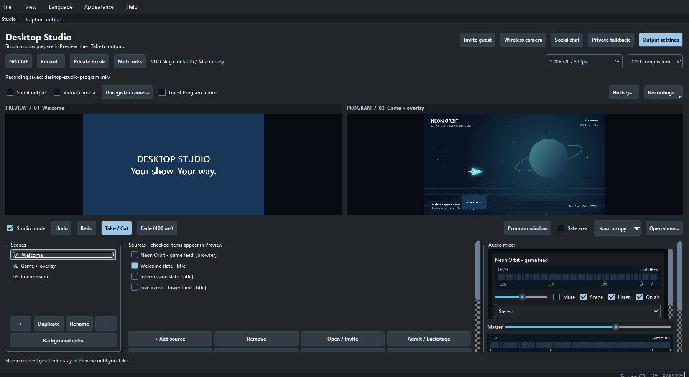

Your show, on your desktop.
Mix cameras, games, guests and browser overlays. Stream live, record locally, or do both — from one workspace.
Windows x64 · Free and open source · Release notes

Build your scene
Cameras, window capture, media and transparent web overlays. Switch scenes in landscape or portrait.
Bring everyone in
Guest and wireless-camera invitations, mix-minus audio, track meters and headphone monitoring.
Go live. Keep a copy.
Record alongside VDO.Ninja, RTMP, SRT or WHIP streaming. More destinations in advanced settings.
From a blank canvas to your first show
- Install Desktop Studio and choose Add source.
- Arrange your scene and check the audio meters.
- Choose Record…, or set a destination and press GO LIVE.
Browser sources use Microsoft WebView2 Evergreen, installed and updated separately.
Find the right streaming settings
Pick a recipe for interviews, gaming or vertical live shows. Compare resolution and bitrate, choose a hardware encoder, and see the measured CPU/GPU cost.